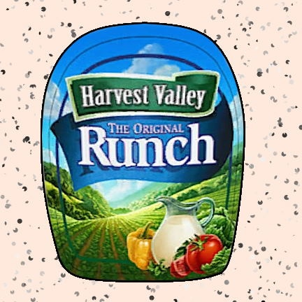

Runch

Noah's Runch
This is the first recipe I made on my own! I love to cook and experiment.
I made this to go with my brother's fried rice. It's the perfect combination of sour and rancid!
No chef's arsenal is complete without this all purpose ingredient
Ingredients
- 1 gallon Milk
- 1 cup whole black peppercorns
- 1 can of MtnDew pitch black
- crust
Steps
- In a large bowl or stand mixer combine the gallon of milk and can of MtnDew pitch black
- Whip this mixture until it is homogenous and fluffy
- Slowly fold in the whole black peppercorns to taste
- Sprinkle in some crust on the top and it's finished!
I recommend bottling this and keep it refridgeerated. It should last a year in the fridge!